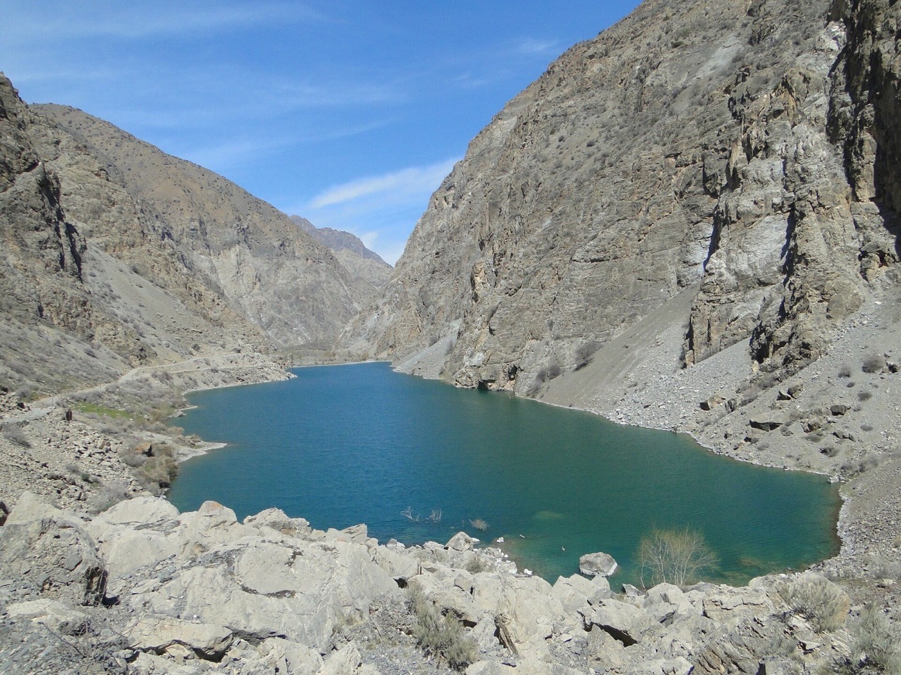

Локация и высота
Расположение: Нижняя часть долины Шинг, Фанские горы.
Высота: около 1640 м.
Высоты на страницах озёр лучше показывать как ориентировочные, потому что в разных travel sources встречаются небольшие расхождения.
Seven Lakes by lake • Нежигон
Нежигон открывает маршрут по Haft Kul и сразу задает визуальный тон всей поездке: яркая вода, спокойный старт и первые панорамы долины Шинг.

Это самое нижнее озеро каскада, поэтому именно здесь многие туристы впервые видят знаменитую палитру Seven Lakes. В хорошую погоду вода меняет оттенок от мягкого бирюзового до насыщенного синего.
Расположение: Нижняя часть долины Шинг, Фанские горы.
Высота: около 1640 м.
Высоты на страницах озёр лучше показывать как ориентировочные, потому что в разных travel sources встречаются небольшие расхождения.
Это самое нижнее озеро каскада, поэтому именно здесь многие туристы впервые видят знаменитую палитру Seven Lakes. В хорошую погоду вода меняет оттенок от мягкого бирюзового до насыщенного синего.
После Нежигона маршрут естественно продолжается к озеру Соя. Для полноценного понимания каскада стоит смотреть первое озеро не отдельно, а как точку входа в Seven Lakes Tajikistan.
Эта страница должна помогать не только в поиске информации по озеру, но и в планировании всего маршрута по Haft Kul.
После Нежигона маршрут естественно продолжается к озеру Соя. Для полноценного понимания каскада стоит смотреть первое озеро не отдельно, а как точку входа в Seven Lakes Tajikistan.